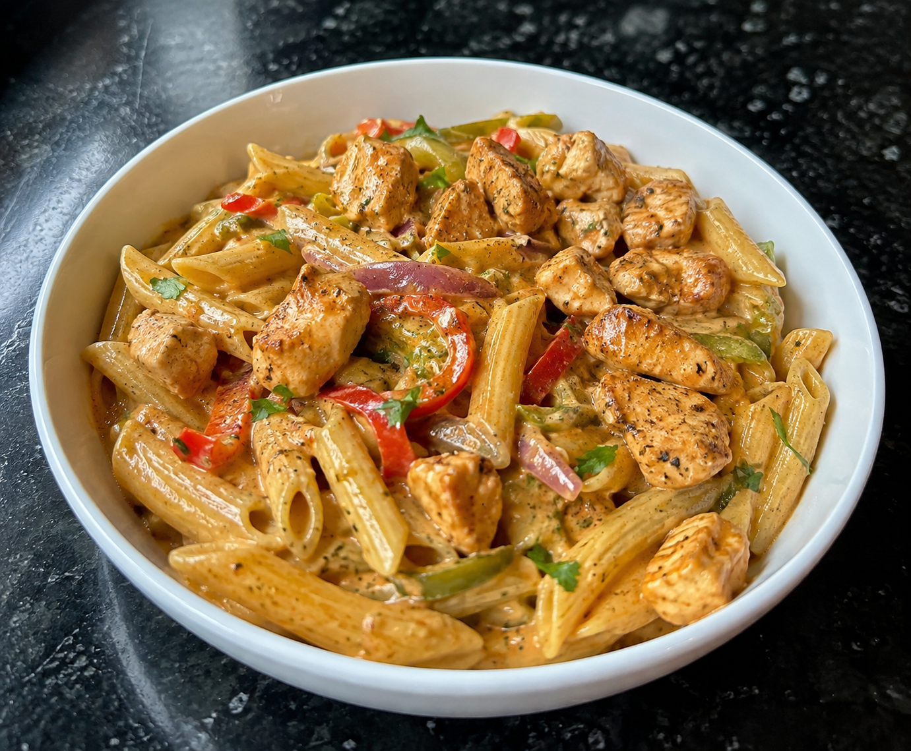

1.Creamy Chicken Pasta

Ingredients
- 300g dried pasta
- 2 large chicken breasts
- 1 red onion
- 1 bell pepper
- 2 tsp smoked paprika
- 2 tsp garlic powder
- 1 tsp oregano
- 1.5 tbsp tomato puree
- 50ml chicken stock
- 150ml double cream
- Salt&pepper to taste
- Mozarella cheese
- Parsley or coriander to finish
Steps
- Cut chicken into bite sized pieces and season with paprika, garlic powder, oregano, salt and pepper. Set aside.
- Chop the red onion and peppers
- Boil pasta for about 13-15 minutes, reserving 1/2 cup of pasta water before draining.
- Pan-fry the seasoned chicken 5-6 minutes until golden and cooked through. remove and set aside.
- In the same pan, cook onion and peppers 3-4mins. Stir in tomato puree then deglaze with chicken stock.
- Lower the heat, stir in the double cream, then return the chicken and pasta to the pan and mix well.
- Stir in grated mozarella until melted. Simmer gently 1-2 minutes.
- Remove from heat and finish with parsely or coriander